Web & Enterprise Systems
Thesis System
Project Overview
Developed as a flagship undergraduate thesis project, this web application addresses the challenges of localized weather forecasting by delivering high-accuracy meteorological predictions specifically for the Metro Manila area.
The Problem & Solution
Standard macro-level weather models often struggle with the microclimates and rapid urban weather shifts in dense metropolitan areas. This system utilizes advanced data-driven modeling to process historical weather patterns, providing localized stakeholders with highly reliable, actionable forecasting.
Key Features & Implementation
Dual-Aspect Forecasting: Simultaneously predicts both the quantitative probability of rain occurrence (%) and the exact expected rainfall volume (mm) for specific municipalities.
- Two-Stage Predictive Modeling: Implements robust data-handling to minimize environmental noise and ensure stable algorithmic convergence.
- Data Visualization: Features an intuitive dashboard designed to display meteorological trends cleanly for both technical and non-technical users.

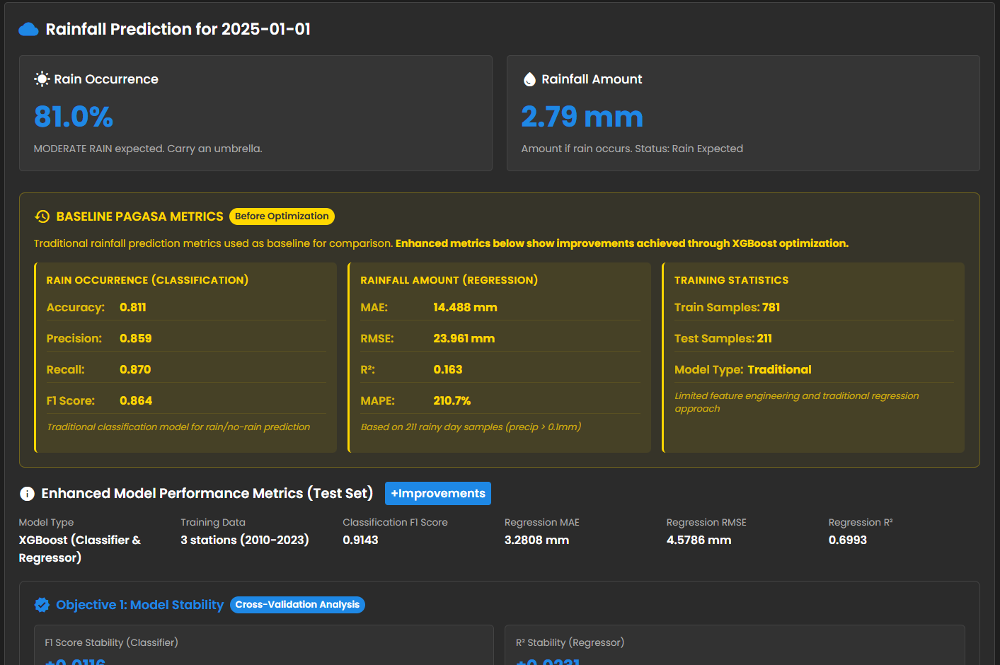
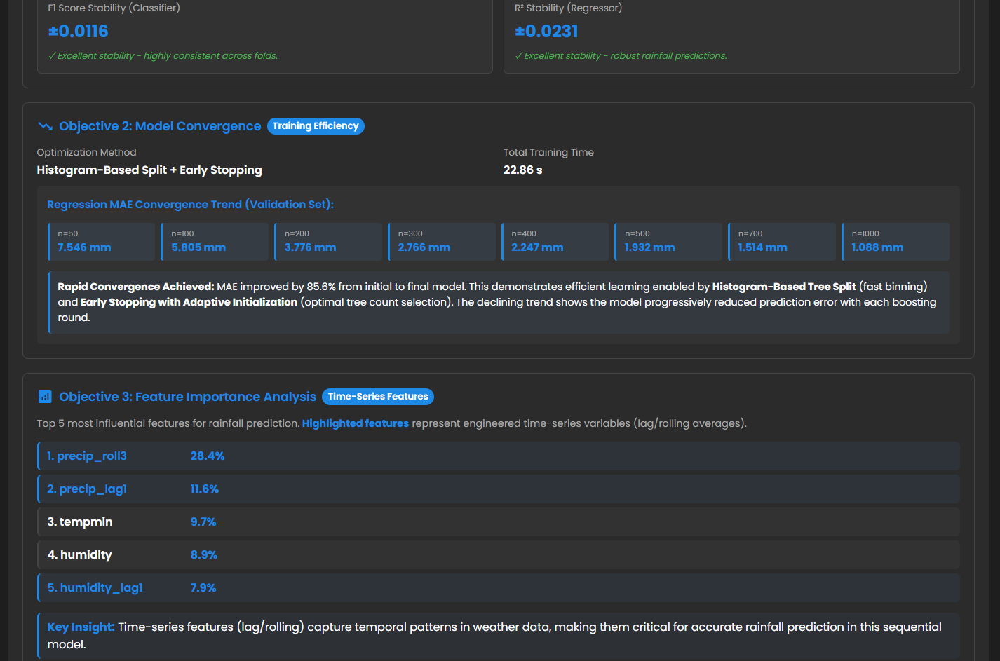
MRP System
Project Overview
This web-based Material Requirements Planning (MRP) system was engineered as a comprehensive business operations project to simulate production logistics, inventory control, and supply chain management for a hypothetical corporation.
The Problem & Solution
Manufacturing pipelines frequently bottleneck due to poor tracking of raw materials and mismatched production schedules. This application automates those calculations, linking product demand directly back to component availability to ensure seamless operational workflows.
Key Features & Implementation
- Recipe & Formula Management: Centralizes the exact ingredient and component ratios required for a diverse catalog of finished products.
- Dynamic Bill of Materials (BOM): Automatically generates structural lists of raw materials, assemblies, and sub-components needed to manufacture a specified volume of goods.
- Real-Time Material Tracking: Features a live inventory ledger that updates automatically as production demands fluctuate, preventing stockouts and over-purchasing.

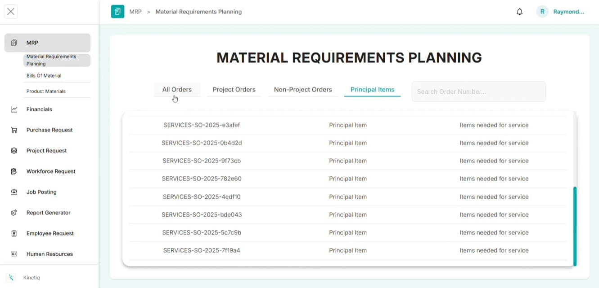
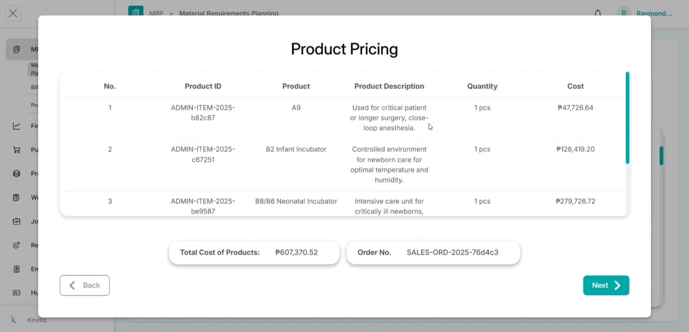
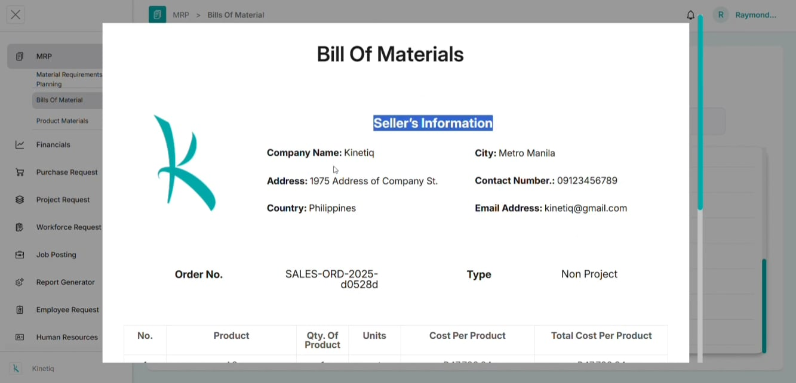
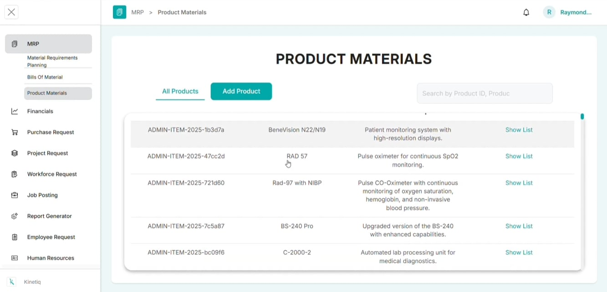
Mobile Applications
Cosmic Combo
Project Overview
Cosmic Combo is an engaging, fast-paced mobile puzzle game that merges classic memory mechanics with a polished, deep-space visual theme.
The Problem & Solution
Mobile casual games require immediate cognitive hooks and smooth rendering to keep players engaged. Cosmic Combo solves this by pairing low-latency, responsive touch mechanics with a captivating, cohesive aesthetic that rewards player progression.
Key Features & Implementation
- Immersive Celestial Aesthetic: Built using a custom-designed user interface featuring vibrant space assets, smooth transitions, and thematic visual effects.
- Dynamic State Management: Utilizes efficient card-state tracking to manage flips, matches, mismatches, and board resets smoothly without dropping frames.
- Adaptive Difficulty: Features scalable grid layouts and progression levels that challenge a player's memory and speed over time.

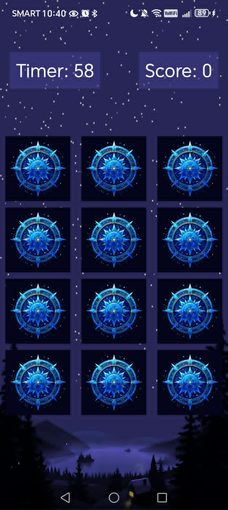
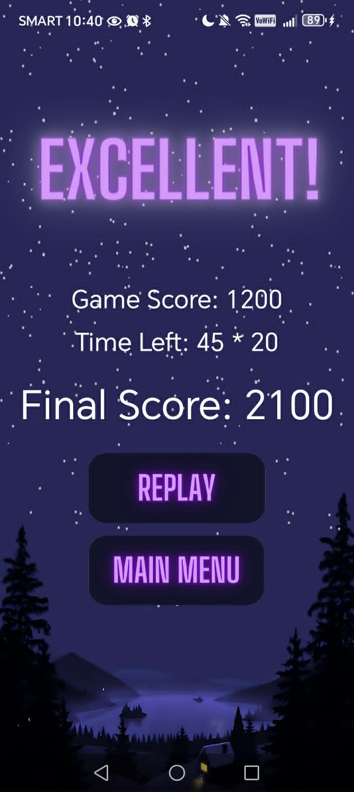
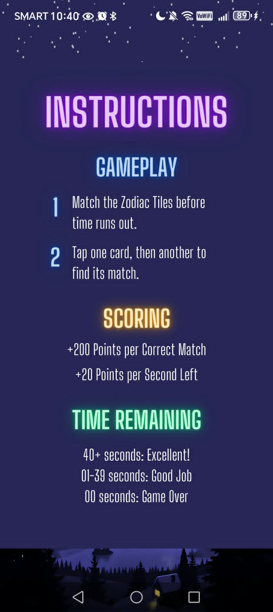
Medi-Sync
Project Overview
Medi-Sync is a patient-centric mobile healthcare application dedicated to simplifying personal medication management and improving treatment adherence through intelligent automation.
The Problem & Solution
Managing multiple prescription schedules, variable dosages, and strict timings can be overwhelming, frequently leading to missed doses. Medi-Sync minimizes human error by serving as a fail-safe digital assistant that tracks complex schedules seamlessly.
Key Features & Implementation
- Automated Alert & Notification System: Deploys high-priority, persistent background alerts to ensure users are notified of their medication windows at the exact designated times.
- Intelligent Schedule Tracking: Supports complex, customizable scheduling configurations—such as recurring intervals, specific days of the week, or changing dosage amounts.
- Adherence Logging: Maintains a chronological history of taken or skipped medications, allowing users to keep an accurate record for their healthcare providers.

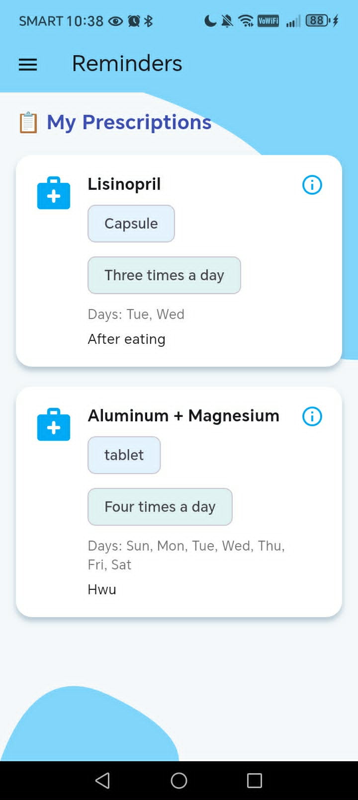
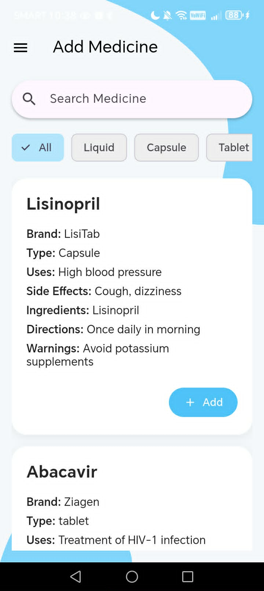
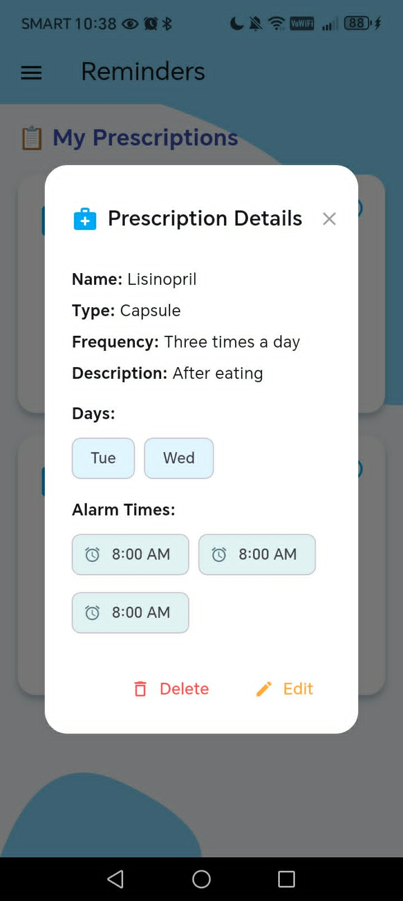
Unscramble 60
Project Overview
Unscramble is an interactive, educational mobile word game specifically designed to gamify technical learning and bridge the knowledge gap for individuals entering the technology sector.
The Problem & Solution
The Information Technology industry is notorious for its steep learning curve, heavily relying on a massive sea of complex jargon, acronyms, and technical concepts. Unscramble transforms this intimidating vocabulary into an engaging, accessible learning experience through puzzle-based reinforcement.
Key Features & Implementation
- Curated Tech Dictionary Puzzles: Features an expansive database of industry-standard jargon spanning software development, network engineering, data science, and cybersecurity.
- Gamified Learning Mechanics: Utilizes anagram unscrambling, timed challenges, and hint systems to keep players cognitively engaged while building vocabulary retention.
- Contextual Definitions: Providing the correct spelling is only half the battle; once a word is solved, the system displays a concise, practical breakdown of the term's meaning and real-world application.

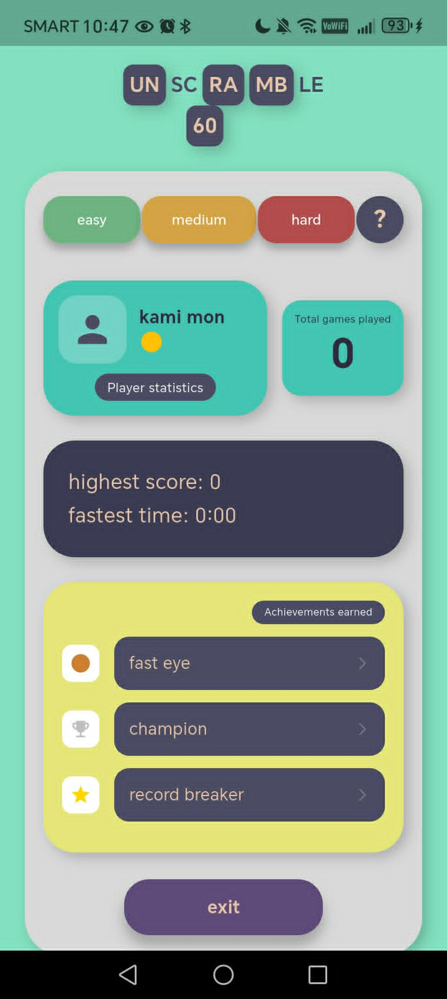
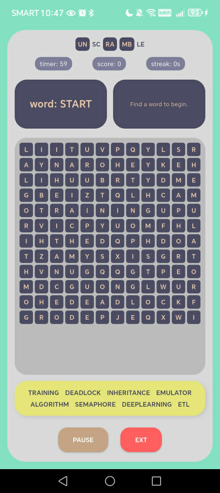